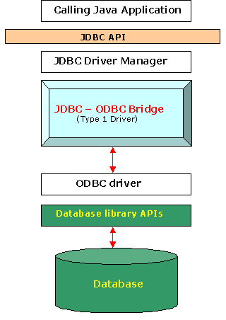

Hace años, cuando Sun Microsystems desarrolló Java, uno de los aspectos que tuvieron que pensar fue la manera de enfocar el acceso a datos, todo lo concerniente a los protocolos de acceso a bases de datos. En este sentido, Sun buscó los aspectos de éxito de un API abierto: ODBC (Open Database Connectivity).
ODBC había sido desarrollado por Microsoft con la idea de tener un estándar para el acceso a bases de datos en entorno Windows.
Aunque la industria aceptó ODBC como medio principal para acceso a bases de datos en Windows, la verdad es que no se introduce bien en el mundo Java, debido a la complejidad que presenta ODBC, y que entre otras cosas ha impedido su transición fuera del entorno Windows.
La idea en el desarrollo de JDBC era intentar ser tan sencillo como fuera posible, pero proporcionando a los desarrolladores la máxima flexibilidad.
A través de esta API, se establece la conexión a la BBDD, que nos permitirá realizar consultas, actualizar los datos y recibir resultados de las consultas. Permite realizar operaciones con lenguaje SQL independientemente de la instancia de la base de datos utilizada.
La API de JDBC soporta la comunicación entre la aplicación Java y el driver que realizará la conexión con la base de datos, es decir, actúa como intermediaria. JDBC es la API común con la que interactúa el código de nuestra aplicación. Debajo está el controlador compatible con JDBC para la base de datos que vamos a utilizar.
Según qué base de datos queramos utilizar, tendremos que usar el driver correspondiente.
Como ventajas, podemos destacar que es muy fácil de utilizar y permite conectarse a cualquier base de datos. Por otro lado, como desventajas podemos destacar que su rendimiento puede verse degradado y el driver se tiene que instalar en el cliente.